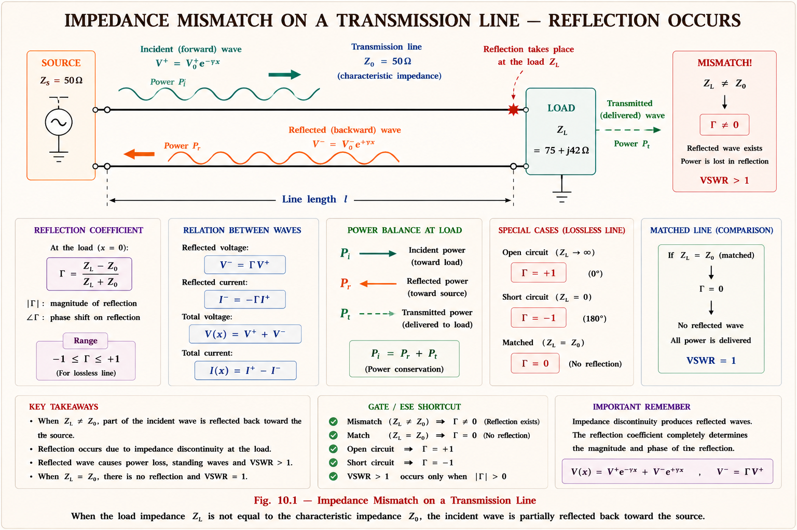
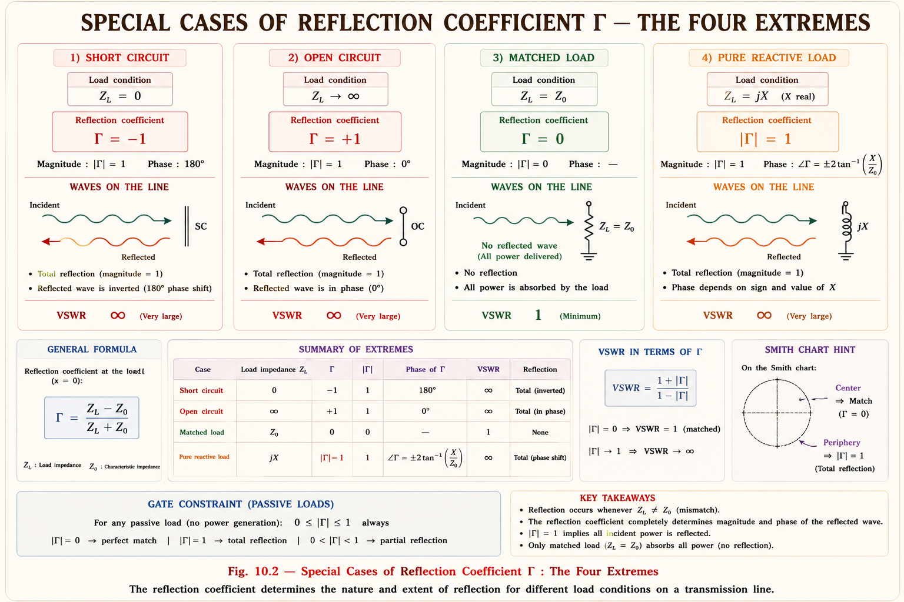
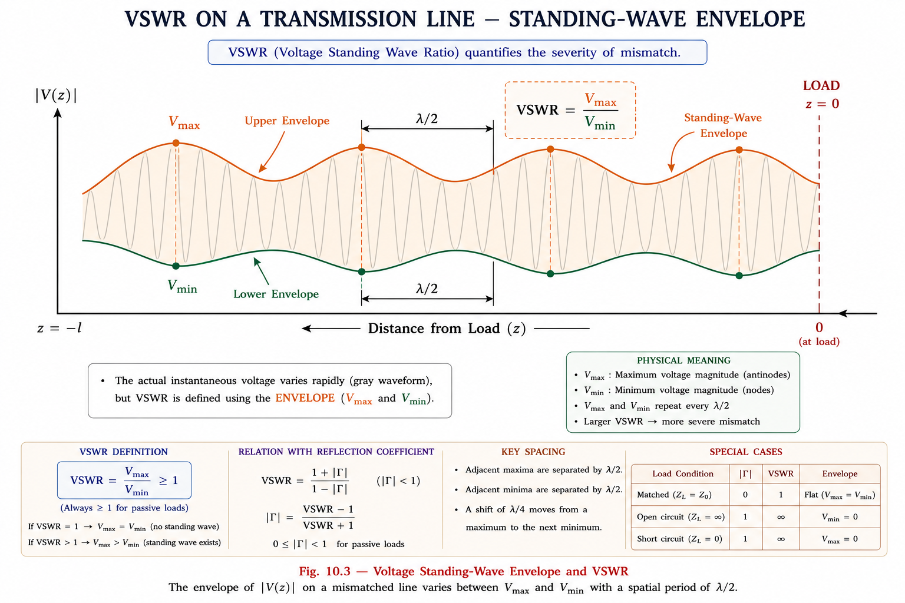
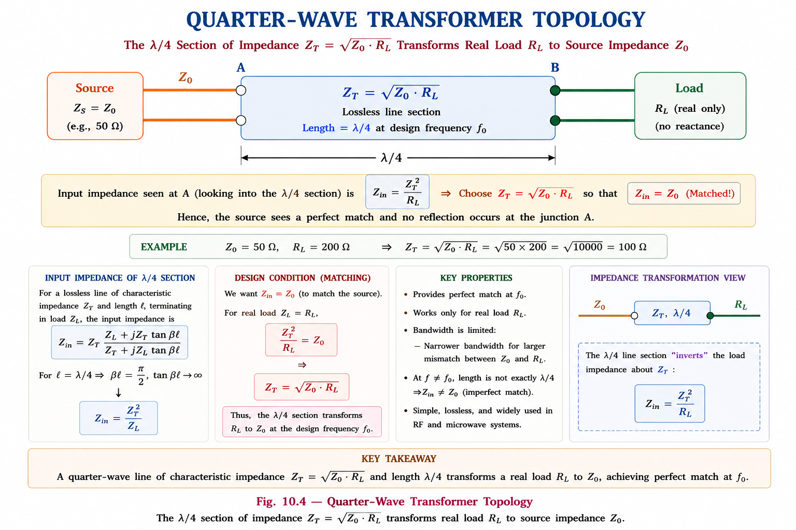
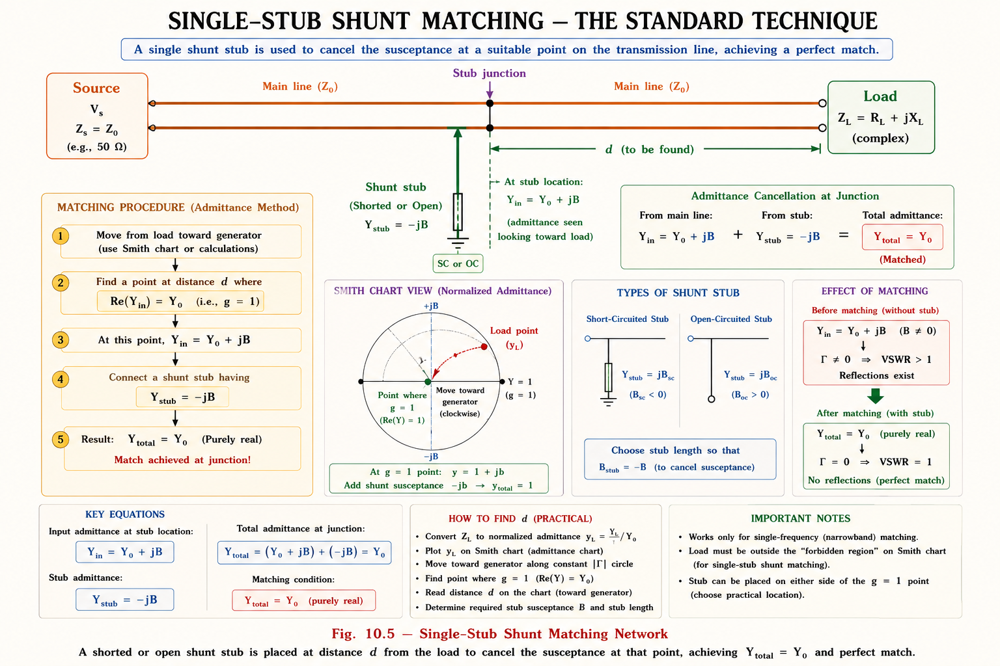
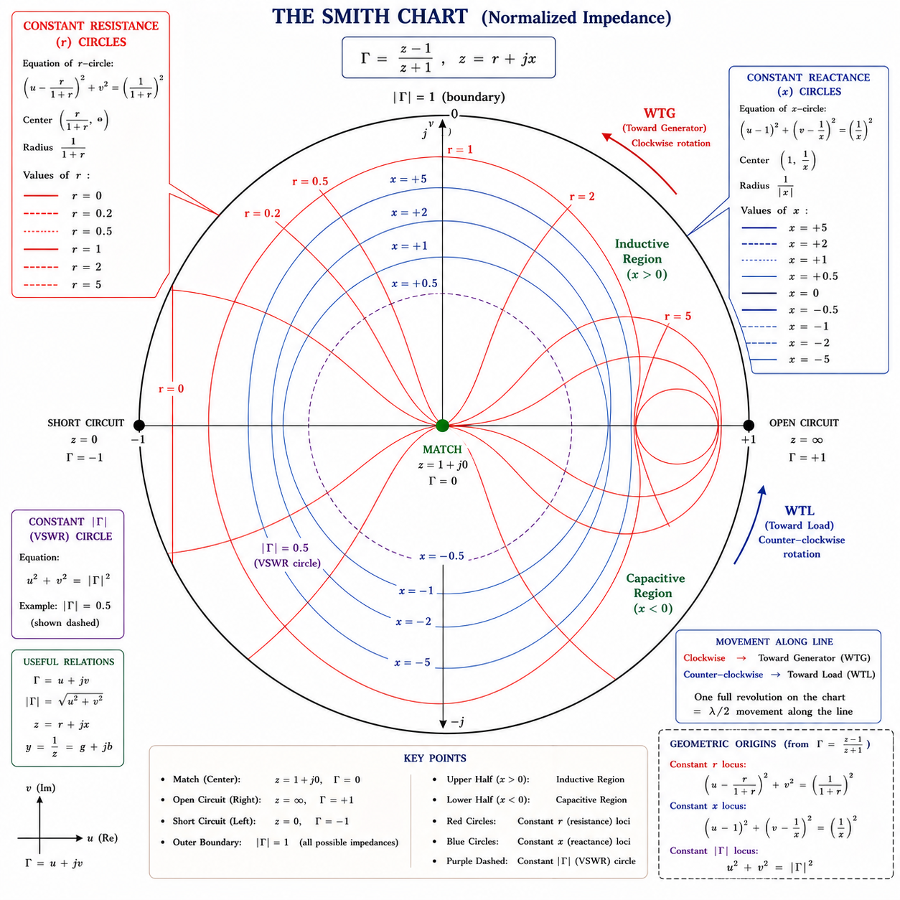
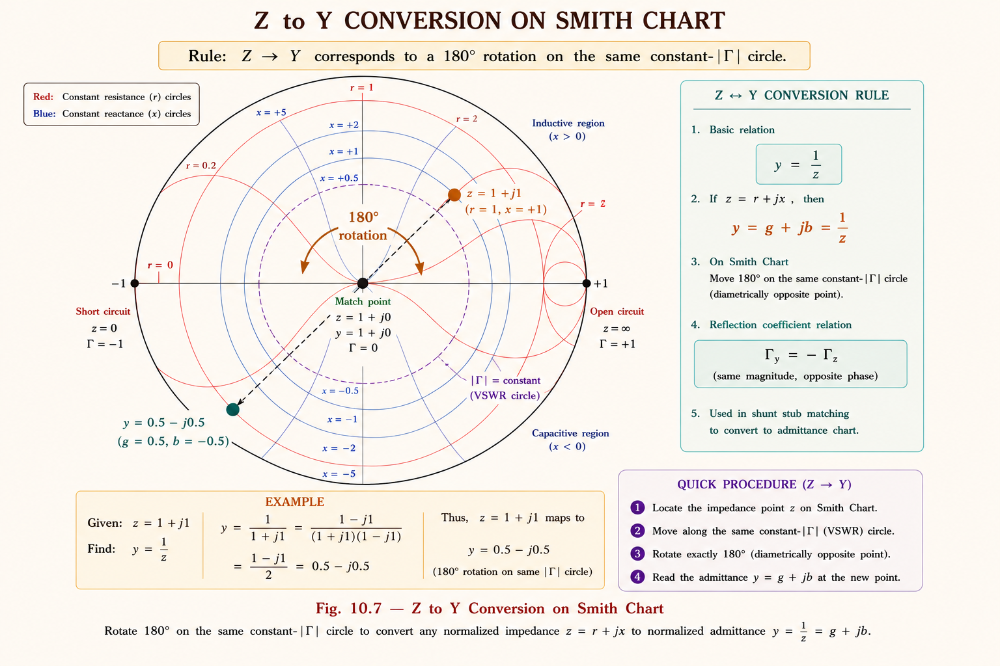

Master reflection coefficient, VSWR, quarter-wave transformers, stub matching and Smith Chart navigation — the complete GATE EC & IES toolkit for RF/microwave transmission-line problems.
Imagine trying to push water through a pipe, but suddenly the pipe diameter changes — half the water bounces back. This is exactly what happens in RF systems when impedances are mismatched. At high frequencies, transmission lines carry power as waves, and any impedance discontinuity reflects a portion of that wave back toward the source.
In a \(50\ \Omega\) coaxial cable feeding an antenna whose impedance is \(73 + j42\ \Omega\), the mismatch causes partial reflection. The transmitter wastes power, the standing waves increase peak voltage (risking dielectric breakdown), and the amplifier may see an unstable load. Impedance matching eliminates all these problems.

The reflection coefficient \(\Gamma\) (Gamma) is the single most important parameter in transmission line theory. It tells you what fraction of the incident wave amplitude is reflected back. Think of it as a measure of how "badly" the impedances are mismatched.
At any point on a transmission line, the reflection coefficient is defined as the ratio of the reflected voltage wave amplitude to the incident voltage wave amplitude:[1]
where \(Z_L\) is the load impedance and \(Z_0\) is the characteristic impedance of the line. In general, \(Z_L\) is complex, so \(\Gamma_L\) is also complex with magnitude and phase.
This shows that as you move from the load toward the source, the magnitude \(|\Gamma|\) stays constant, but the phase rotates by \(-2\beta\ell\). This is the basis of moving around the Smith Chart.

\(\Gamma\) is a voltage ratio. The power reflection is \(|\Gamma|^2\), not \(|\Gamma|\). If \(|\Gamma| = 0.5\), only 25% of power is reflected (not 50%). This distinction is frequently tested in GATE numericals.
When a reflected wave travels backward and interferes with the forward-traveling incident wave, their superposition creates a standing wave pattern — regions of maximum and minimum voltage amplitude that are fixed in space along the line.[1]

| \(|\Gamma|\) | \(\text{VSWR}\ (S)\) | Return Loss (dB) | % Power Reflected | Quality |
|---|---|---|---|---|
| 0 | 1.0 (perfect) | ∞ | 0% | Perfect match |
| 0.05 | 1.11 | 26.0 | 0.25% | Excellent |
| 0.10 | 1.22 | 20.0 | 1% | Very good |
| 0.20 | 1.50 | 14.0 | 4% | Good (spec limit) |
| 0.33 | 2.0 | 9.54 | 11% | Acceptable |
| 0.50 | 3.0 | 6.02 | 25% | Poor |
| 1.0 | ∞ | 0 | 100% | Total reflection |
\(S = 1\): Perfect match (like a mirror with no reflection — everything transmitted). \(S = \infty\): Short or open circuit (complete mirror — everything reflected). In practice, \(\text{VSWR} \le 1.5\) is considered acceptable for most antenna systems.
These positions repeat every \(\lambda/2\). For a short circuit (\(\Gamma = -1\), angle \(= 180^\circ\)), \(V_{\min} = 0\) occurs right at the load; \(V_{\max}\) occurs at \(\lambda/4\) from the load. For an open circuit (\(\Gamma = +1\), angle \(= 0^\circ\)), \(V_{\max}\) is right at the load.
The input impedance looking into a transmission line of length \(\ell\), terminated in load \(Z_L\), is what the source "sees." This is the transformed version of \(Z_L\) due to the distributed nature of the line.[1]
where \(\beta = 2\pi/\lambda\) is the phase constant and \(\ell\) is the line length.
| Line Length | Load \(Z_L\) | \(Z_{in}\) | GATE Importance |
|---|---|---|---|
| \(\ell = \lambda/4\) (\(\beta\ell=90^\circ\)) | \(Z_L\) | \(Z_0^2/Z_L\) | ★★★★★ Very High |
| \(\ell = \lambda/2\) (\(\beta\ell=180^\circ\)) | \(Z_L\) | \(Z_L\) | ★★★★ High |
| \(\ell = n\lambda/2\) | \(Z_L\) | \(Z_L\) | ★★★★ High |
| Any \(\ell\) | 0 (Short) | \(jZ_0 \tan(\beta\ell)\) | ★★★ Medium |
| Any \(\ell\) | ∞ (Open) | \(-jZ_0 \cot(\beta\ell)\) | ★★★ Medium |
| \(\ell = \lambda/4\) | 0 (Short) | ∞ (Open circuit!) | ★★★★ High |
| \(\ell = \lambda/4\) | ∞ (Open) | 0 (Short circuit!) | ★★★★ High |
A half-wavelength line is a perfect impedance repeater — whatever load you connect, the input impedance looks identical. This is used to connect antenna elements to feedlines at a convenient location without changing the impedance.
For stub matching (shunt connections), it is more convenient to work with admittance \(Y = 1/Z\). The normalized admittance is \(\bar{y} = Y/Y_0 = Z_0 \cdot Y\).
On the Smith Chart, converting from impedance to admittance is a simple \(180^\circ\) rotation — one of the most powerful tools for quick matching calculations.
The quarter-wave transformer is the most elegant and widely used single-section matching technique. A transmission line of length exactly \(\lambda/4\) acts like an impedance inverter, transforming any real load \(R_L\) to any desired real input impedance \(R_{in}\) by choosing the right characteristic impedance \(Z_T\).
$$Z_T = \sqrt{Z_0 \cdot R_L}$$
The intermediate line section must have characteristic impedance \(Z_T = \sqrt{Z_0 \cdot R_L}\), where \(Z_0\) is the source line impedance and \(R_L\) is the (real) load resistance.

Quarter-wave transformers work only for real (resistive) loads. If the load has a reactive part (\(Z_L = R + jX\)), you must first add a series or shunt element to resonate out the reactance before applying the transformer. This is a common GATE exam scenario. The transformer is also narrowband — it is a perfect match only at the design frequency \(f_0\).
Step 1 — VSWR before matching (no transformer):
Step 2 — Required transformer impedance:
Step 3 — Physical length at 3 GHz:
Answer: Use a \(100\ \Omega\) transmission line section, 2.5 cm long. After matching, \(\text{VSWR} = 1\) (perfect match at 3 GHz).
Stub matching uses short sections of transmission line — called stubs — connected in shunt (parallel) or series at a specific location on the main line to cancel the susceptance (imaginary part of admittance), achieving a match. Stubs can match any complex load, unlike the quarter-wave transformer which only handles real loads.

In practice, short-circuit (SC) stubs are preferred because an open-circuit stub can radiate at its open end, adding uncertainty. However, for microstrip lines, OC stubs are easier to fabricate (no via hole needed for a short circuit). GATE problems may ask about both — always check the boundary condition.
The Smith Chart, invented by Phillip H. Smith at Bell Laboratories in 1939, is a graphical tool that transforms the complex impedance plane into the complex \(\Gamma\) plane. What makes it powerful: moving along a transmission line corresponds to a simple rotation in the \(\Gamma\) plane, replacing complex calculations with ruler and compass.[2]
The chart is based on the bilinear (Möbius) transformation between normalized impedance \(\bar{z} = r + jx\) and reflection coefficient \(\Gamma = \Gamma_r + j\Gamma_i\):
Substituting \(\bar{z} = r + jx\) and \(\Gamma = \Gamma_r + j\Gamma_i\), one can show that constant-r loci and constant-x loci both map to circles in the \(\Gamma\) plane.

| Circle Type | Shape / Location | Physical Meaning | GATE Use |
|---|---|---|---|
| \(r = 0\) | Full outer boundary circle | Pure reactive load (no resistance) | SC stub, OC stub starting points |
| \(r = 1\) | Center-right, passes through chart center | Real part = \(Z_0\) (matched condition) | Single stub: find d here |
| \(x = 0\) | Horizontal real axis | Pure resistive (no reactance) | \(\lambda/4\) transformer region; VSWR circle |
| \(|\Gamma| = \text{const}\) | Circle centered at chart origin | Constant VSWR circle | VSWR = diameter reading; matches circle |
Rule 1 — Moving along line: Moving toward the generator (source) = clockwise rotation on the constant \(|\Gamma|\) circle. One full revolution = \(\lambda/2\) of travel. Moving toward the load = counterclockwise.
Rule 2 — Adding shunt element: Move along constant-conductance circles in the admittance Smith Chart. Adding shunt L → toward SC; adding shunt C → toward OC.
Rule 3 — Z to Y conversion: Simply rotate \(180^\circ\) on the same \(|\Gamma|\) circle. The point diametrically opposite to any impedance point gives its admittance.
The same physical Smith Chart is used for both impedance and admittance. You simply relabel the axes. This dual-use property makes stub matching calculations very efficient.[2]
Given a point on the Smith Chart with coordinates \(\Gamma = \Gamma_r + j\Gamma_i\):
These are the key circles on the Smith Chart, obtained by algebraic manipulation:
Center: \(\left(\frac{r}{r+1},\ 0\right)\) Radius: \(\frac{1}{r+1}\)
Center: \(\left(1,\ \frac{1}{x}\right)\) Radius: \(\left|\frac{1}{x}\right|\)

Draw a circle centered at the chart center through the load point. This is the constant \(|\Gamma|\) circle. Where this circle crosses the positive real axis (right-hand crossing), the value of the normalized resistance \(r\) equals the VSWR value \(S\). This is an extremely fast way to read VSWR without calculation.
Step 1 — Normalize the load:
Plot this point on the Smith Chart. It lies in the capacitive (lower) half.
Step 2 — Read \(|\Gamma|\) and VSWR:
Draw a circle from chart center through \(\bar{z}_L\). The circle intersects the positive real
axis at \(r \approx 4.0\), so \(\text{VSWR} \approx 4\). The distance from center gives
\(|\Gamma|\).
Step 3 — Convert to admittance (rotate \(180^\circ\)):
The admittance point diametrically opposite \(\bar{z}_L = 0.5 - j1\) gives \(\bar{y}_L \approx
0.4
+ j0.8\).
Step 4 — Rotate clockwise (WTG) on \(|\Gamma|\) circle until \(g = 1\) circle is
crossed:
Two solutions typically exist. The first crossing (shorter d) occurs at approximately
\(d
= 0.127\lambda\) toward generator, giving \(\bar{y}_{in} = 1 + j1.58\).
Step 5 — Find stub length to provide \(-j1.58\):
Short-circuit stub: Start from SC point (\(\bar{y} = \infty\), left edge). Move WTG (clockwise)
until
susceptance = \(-1.58\). This occurs at approximately \(\ell = 0.344\lambda\).
Place short-circuit stub at distance \(d = 0.127\lambda\) from load, stub length \(\ell = 0.344\lambda\). After stub, total admittance = \(Y_0\) (normalized \(y = 1 + j0\)). \(\text{VSWR} = 1\). ✓
| Operation | What to Do on Chart | Result |
|---|---|---|
| Move \(\lambda/4\) toward generator | Rotate \(180^\circ\) clockwise | Impedance inverts: \(\bar{z} \to 1/\bar{z}\) |
| Move \(\lambda/8\) toward generator | Rotate \(90^\circ\) clockwise | Reactance changes sign if originally real |
| Add series inductor | Move up on constant-\(r\) circle | \(x\) increases |
| Add series capacitor | Move down on constant-\(r\) circle | \(x\) decreases |
| Add shunt inductor (admittance chart) | Move toward SC on constant-\(g\) circle | \(b\) decreases (more inductive) |
| Add shunt capacitor (admittance chart) | Move toward OC on constant-\(g\) circle | \(b\) increases (more capacitive) |
| Convert \(Z \to Y\) | Rotate \(180^\circ\) on \(|\Gamma|\) circle | \(\bar{y} = 1/\bar{z}\) |
Mistake 1: Rotating the wrong direction — WTG (toward generator) is always
clockwise on the Smith Chart. WTL (toward load) is counter-clockwise.
Mistake 2: Using unnormalized impedances — always normalize first: \(\bar{z} =
Z/Z_0\).
Mistake 3: Adding \(\lambda/4 = 180^\circ\) rotation but adding \(\lambda/2 =
360^\circ\) (full circle,
returns same point).
Mistake 4: Forgetting stub starting point — SC stub begins at SC point (extreme
left); OC stub begins at OC point (extreme right).
A lossless transmission line has a VSWR of 3.0. The magnitude of the reflection coefficient is:
Answer: (C) 0.50
A quarter-wavelength transmission line of characteristic impedance \(Z_T\) is used to match a \(100\ \Omega\) load to a \(25\ \Omega\) source. The value of \(Z_T\) is:
Answer: (C) \(50\ \Omega\)
A lossless transmission line with characteristic impedance \(50\ \Omega\) is short-circuited at the load end. The input impedance seen at a distance \(\lambda/8\) from the short circuit is:
For a short-circuit terminated line: \(Z_{in} = jZ_0 \tan(\beta\ell)\). At \(\ell = \lambda/8\): \(\beta\ell = (2\pi/\lambda)(\lambda/8) = \pi/4\), so \(\tan(\pi/4) = 1\).
Answer: (C) \(j50\ \Omega\) (pure inductive — useful as a series stub!)
The center of a Smith Chart corresponds to which of the following?
The center of the Smith Chart has \(\Gamma = 0\), which means \(Z_L = Z_0\) — the perfectly matched condition. \(\text{VSWR} = 1\) at this point. The left edge is SC (\(\Gamma = -1\)), right edge is OC (\(\Gamma = +1\)).
Answer: (B)
A transmission line has \(\text{VSWR} = 2\). What percentage of incident power is reflected?
Answer: (C) 11.1% — Note: a common trap is confusing \(|\Gamma|\) (voltage ratio 33%) with \(|\Gamma|^2\) (power ratio 11%).
A lossless line of characteristic impedance \(75\ \Omega\) is open-circuited at the load end. What is the input impedance at a distance \(\lambda/4\) from the load?
Using \(Z_{in} = Z_0^2/Z_L\) for \(\lambda/4\) line: \(Z_{in} = 75^2/\infty = 0\). A \(\lambda/4\) open-circuit stub looks like a short circuit at its input! This is used as a "quarter-wave short" in microwave filters.
Answer: (C) \(0\ \Omega\) (short circuit)
Type any question about reflection coefficient, VSWR, Smith Chart, stub matching, or quarter-wave transformer and get an instant expert answer.
\(\Gamma = \frac{Z_L - Z_0}{Z_L + Z_0}\). Complex. \(|\Gamma| \in [0,1]\). Short: \(-1\). Open: \(+1\). Matched: \(0\). Power reflection = \(|\Gamma|^2\). At distance \(\ell\): \(\Gamma(\ell) = \Gamma_L e^{-j2\beta\ell}\).
\(S = \frac{1 + |\Gamma|}{1 - |\Gamma|}\). \(S \in [1, \infty)\). \(S=1\): perfect match. \(S=\infty\): total reflection. \(V_{\max}, V_{\min}\) repeat every \(\lambda/2\). \(\text{VSWR}\) = \(r\)-reading at right-axis crossing on Smith Chart.
\(Z_{\text{in}} = Z_0 \frac{Z_L + jZ_0 \tan\beta\ell}{Z_0 + jZ_L \tan\beta\ell}\). \(\lambda/4\) line inverts: \(Z_{\text{in}} = \frac{Z_0^2}{Z_L}\). \(\lambda/2\) line repeats: \(Z_{\text{in}} = Z_L\). SC stub: \(jZ_0\tan\beta\ell\). OC stub: \(-jZ_0\cot\beta\ell\).
\(Z_T = \sqrt{Z_0 R_L}\). Matches real loads only. Narrow bandwidth. Fast, simple. Cannot match complex loads directly — must first resonate reactance.
Single shunt SC/OC stub matches any complex load. Find \(d\): where \(g=1\) circle crossed. Stub cancels susceptance. SC stub preferred in practice. OC easier in microstrip.
\(\Gamma\)-plane with \(r\) and \(x\) circle families. Moving WTG = clockwise, \(\lambda/2\) = full revolution. \(Z \to Y = 180^\circ\) rotation. VSWR circle = constant \(|\Gamma|\). Center = match. Left = SC. Right = OC.
REFLECTION COEFFICIENT
$$\Gamma_L = \frac{Z_L - Z_0}{Z_L + Z_0} \quad |\Gamma_L| \in [0, 1]$$ $$\Gamma(\ell) = \Gamma_L e^{-j2\beta\ell} \quad \text{(move toward source by } \ell\text{)}$$ $$\text{RL (return loss)} = -20 \log_{10}|\Gamma|\ \text{dB (larger = better)}$$VSWR
$$S = \frac{1 + |\Gamma|}{1 - |\Gamma|} \quad S \in [1, \infty)$$ $$|\Gamma| = \frac{S - 1}{S + 1}$$ $$\frac{P_{\text{ref}}}{P_{\text{inc}}} = |\Gamma|^2 \quad \text{(NOT } |\Gamma|\text{!)}$$INPUT IMPEDANCE (lossless line)
$$Z_{in} = Z_0 \frac{Z_L + jZ_0\tan\beta\ell}{Z_0 + jZ_L\tan\beta\ell}$$ $$\lambda/4 \text{ line: } Z_{in} = \frac{Z_0^2}{Z_L}$$ $$\lambda/2 \text{ line: } Z_{in} = Z_L$$ $$\text{SC stub: } Z_{in} = jZ_0\tan\beta\ell$$ $$\text{OC stub: } Z_{in} = -jZ_0\cot\beta\ell$$QUARTER-WAVE TRANSFORMER
$$Z_T = \sqrt{Z_0 R_L} \quad \text{(for real } R_L \text{ only)}$$ $$\text{Length} = \lambda/4 \text{ at design frequency}$$SMITH CHART NAVIGATION
$$\text{WTG (toward generator) } \to \text{clockwise } \mid \lambda/2 = \text{full circle}$$ $$Z \to Y \text{ conversion } \to 180^\circ \text{ rotation on same } |\Gamma| \text{ circle}$$ $$\text{VSWR} = r\text{-value at positive real axis crossing of } |\Gamma| \text{ circle}$$ $$\text{SC stub starts at left edge } \mid \text{ OC stub starts at right edge}$$All technical content is derived from the following standard textbooks. All explanations, derivations, diagrams, and examples are original to Aarova AI.